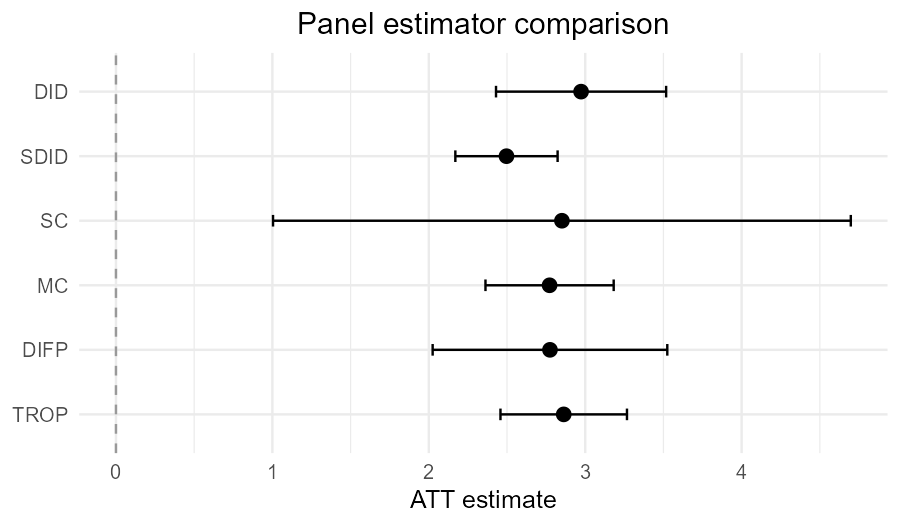
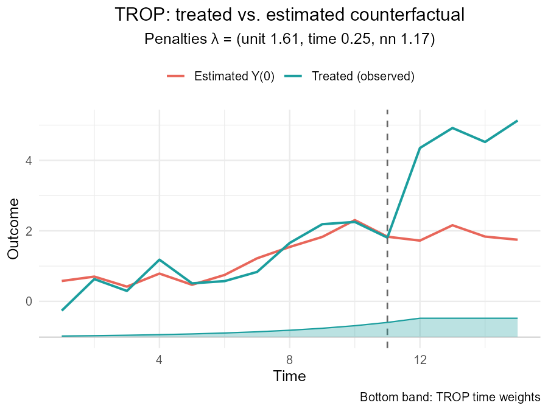
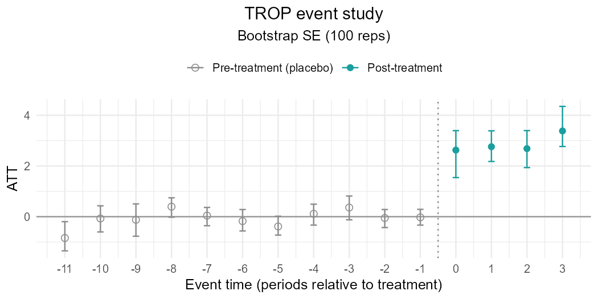
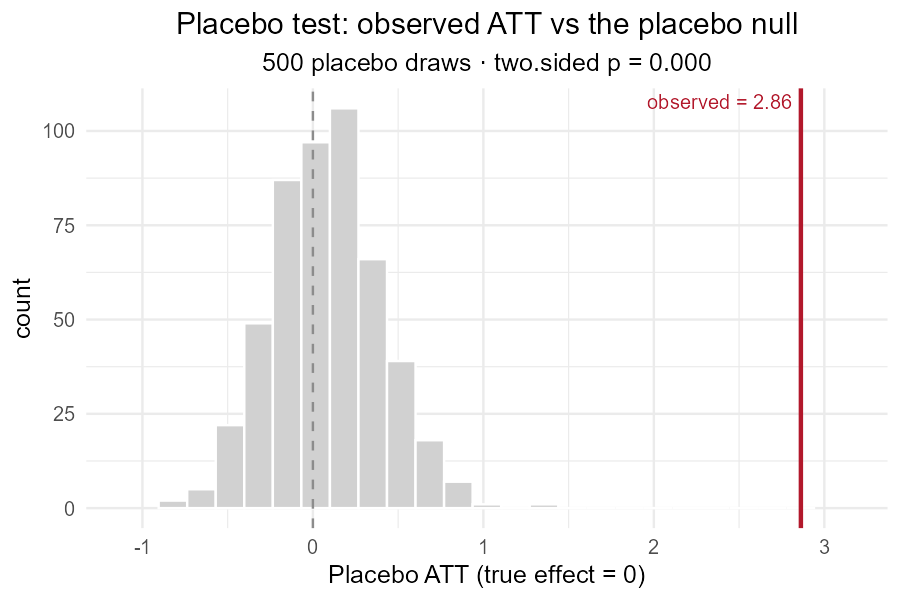
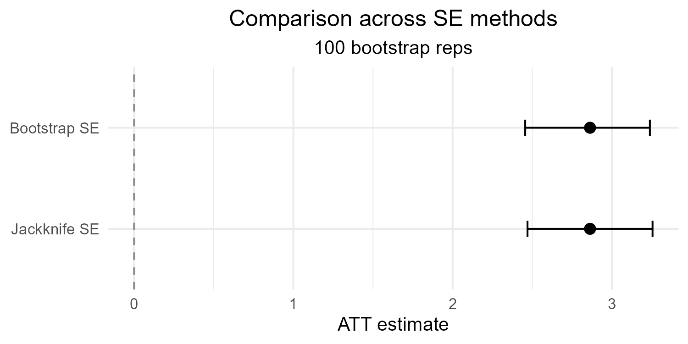
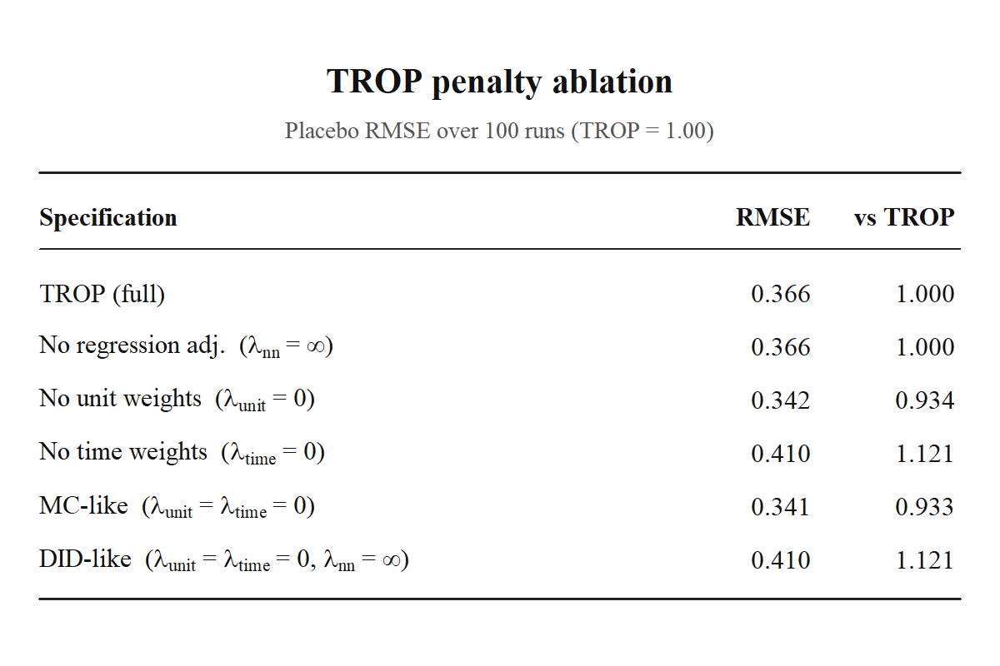
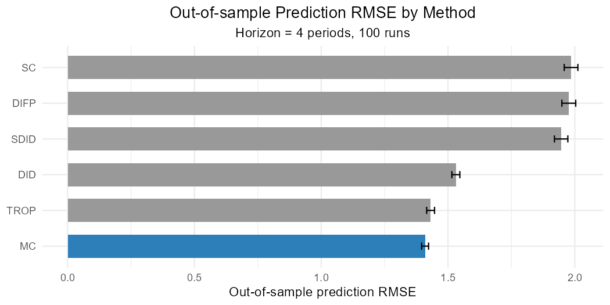

The problem
You have a binary-treatment panel and several plausible estimators: classic difference-in-differences (DID), synthetic difference-in-differences (SDID), synthetic control (SC), matrix completion (MC), and the Triply RObust Panel (TROP) estimator of Athey, Imbens, Qu & Viviano (2026). Each lives in its own package with its own data format, its own notion of a “treatment effect” and its own plot. Comparing them on the same dataset means re-shaping data five times and reconciling five different output objects by hand.
cfcompare does that reconciliation for you. You pass one
long-format data frame and a vector of method names; you get back one
tidy table of ATTs and one plot.
A simulated panel
sim_panel() draws from a low-rank factor model
Y_it(0) = alpha_i + beta_t + L_it + eps_it and adds a
constant treatment effect to treated cells, so we know the ground
truth.
df <- sim_panel(N = 16, T = 9, n_treated = 3, t0 = 7, rank = 2,
att = 2, noise = 1, seed = 1)
head(df)The columns are the unit id (id), time (t),
observed outcome (y), the 0/1 treatment indicator
(w), and the oracle untreated outcome (y0, for
evaluation only). The true ATT here is 2.
Comparing estimators
cmp <- panel_compare(
df,
outcome = "y", treatment = "w", unit = "id", time = "t",
methods = c("DID", "MC", "TROP"),
se = "jackknife",
control = trop_control(n_cv_cells = 12L, cv_cycles = 1L)
)
cmpThe att element is a cf_att_tbl: one row
per method, all on the same schema (cmp$att). If you omit
methods, panel_compare() runs its default set
— TROP, DID, SC, MC,
SDID, and DIFP (the native engines plus
synthetic DID and synthetic control). To run the defaults
without a particular method, pass exclude rather
than retyping the list, e.g.
panel_compare(..., exclude = "DIFP"). The same
methods / exclude arguments work in
panel_rmse() and rmse_curve().
Every estimate carries the number of treated cells and units, the
estimated rank of the low-rank component L (for the native
engines), and a note column that records anything that was
skipped.
autoplot() on the comparison gives a forest plot of the
ATTs with their confidence intervals:
autoplot(cmp)
plot_counterfactual() overlays the observed
treated-average path against each estimator’s predicted untreated path,
so you can see where the methods disagree, not just by how
much:
plot_counterfactual(cmp)One estimator at a time
trop() is the workhorse. Called on its own it
cross-validates the three penalties — time-weight decay, unit-weight
decay, and the nuclear-norm penalty on L — by leaving out
control cells one at a time and scoring the prediction.
fit <- trop(df, "y", "w", "id", "t", se = "jackknife",
control = trop_control(n_cv_cells = 12L, cv_cycles = 1L))
fitThe fitted object exposes the per-cell effects, the estimated untreated-outcome matrix, and the selected penalties:
head(fit$tau_cells)
fit$lambdaCalling autoplot() on a single trop fit
gives a synthetic-control-style trajectory: the treated-unit average
against the estimated Y(0), with a dashed line marking the
first treated period (the post-treatment gap between the two lines is
the effect, left unshaded so it is not mistaken for a confidence band).
Because TROP carries explicit time weights, those weights are drawn as a
filled band along the bottom, in the style of synthdid’s
time-weight strip. The band shows time weights — how much each
period the counterfactual leans on — not observation counts; it is flat
when lambda_time = 0 (uniform weighting). Use
show_weights = FALSE to drop the band.
This trajectory shows only point estimates — no standard errors — so
by default the subtitle reports just the selected penalties (set
show_se = TRUE to also note the SE method). To see
the fit’s uncertainty, use trop_event_study() (next
section). The se = argument on trop() still
controls the standard error shown in print(),
as_att(), and the comparison forest plot.
autoplot(fit)
Per-period effects (event study)
trop_event_study() breaks the single ATT into per-period
effects indexed by event time (periods relative to each unit’s first
treated period). It reuses the fit’s resampling — aggregating each
resample’s per-cell effects by event time rather than into one
mean — so it adds no modelling assumptions beyond those of the fit
itself. With pre_periods = TRUE (the default) the
pre-treatment gaps come back as placebo / pre-trend points, and
autoplot() draws the event-study figure: per-period points
with pointwise confidence bars, pre-treatment points shown distinctly, a
dotted line at treatment onset, and a solid line at zero. A flat
pre-period profile and a clear post-treatment jump are the visual
signature of a credible design. The per-period intervals are wider than
the overall ATT interval and are pointwise rather than simultaneous.
es <- trop_event_study(fit, se = "bootstrap") # bootstrap is the default
es
autoplot(es)
Is the effect distinguishable from zero? A placebo test
trop_placebo_test() asks a different question from the
standard errors above: could an effect this large appear by chance
if the treatment did nothing? It takes a fitted trop
object, repeatedly re-assigns the treated units’ timing pattern to
randomly chosen control units (where the true effect is
zero), re-estimates the ATT at the fit’s selected penalties, and builds
the resulting placebo null distribution. The observed
ATT is then compared against that null; the share of placebo draws as
extreme as the observed effect is the p.value
(alternative chooses a one- or two-sided test).
pt <- trop_placebo_test(fit, B = 500)
ptautoplot() draws the null as a histogram with the
observed ATT marked, so it is easy to see whether the real estimate sits
in the tail:
autoplot(pt)
This randomization test is the recommended tool for the “is it distinguishable from zero” question; use the bootstrap or jackknife (below) for a standard error and confidence interval on the effect size itself.
Comparing standard-error methods
The point estimate is fixed by cross-validation; only the
interval depends on how you resample.
compare_se_modes() refits the same estimate under each SE
method so you can see how the intervals differ:
se_cmp <- compare_se_modes(
df, "y", "w", "id", "t",
se = c("bootstrap", "jackknife"),
control = trop_control(n_cv_cells = 12L, cv_cycles = 1L)
)
se_cmpautoplot() shows one interval per method with a common
estimate. Zero is always drawn (a dashed reference line) and kept in
view, because for inference what matters is whether the interval clears
zero:
autoplot(se_cmp)
Recovering special cases
The TROP program nests DID and matrix completion. Fixing the penalties by hand matches them numerically, which is a useful sanity check:
did <- trop(df, "y", "w", "id", "t",
lambda = list(time = 0, unit = 0, nn = Inf))
mc <- trop(df, "y", "w", "id", "t",
lambda = list(time = 0, unit = 0, nn = 5))
c(DID = did$att, MC = mc$att, TROP = fit$att)With lambda_nn = Inf and uniform weights the low-rank
term vanishes and the fit is ordinary two-way fixed effects; with a
finite lambda_nn and uniform weights it is matrix
completion; letting cross-validation pick the unit and time weights
gives the full TROP estimator. Passing an explicit lambda
also skips cross-validation entirely — the way to line cfcompare up
against another TROP implementation on identical penalties.
Penalty ablation
trop_ablation() runs that whole sweep of constraints for
you — full TROP, then dropping the unit weights, the time weights, the
regression adjustment, and the combinations that reduce to matrix
completion and difference-in-differences. With rmse = TRUE
it scores each specification by placebo RMSE relative to full TROP (the
robustness exercise behind the paper’s Table 5,
TROP = 1.00):
ab <- trop_ablation(df, "y", "w", "id", "t",
rmse = TRUE, horizon = 3, n_pseudo = 5, n_runs = 100,
control = trop_control(n_cv_cells = 12L, cv_cycles = 1L))
abformat() renders it as paste-ready LaTeX (booktabs) or
Markdown, plot() draws the paper-style table as a figure,
and passing se = "jackknife" (or any [trop()] SE method)
adds standard-error and confidence-interval columns. Because the result
is an ordinary data.frame, it also drops straight into
knitr::kable(), gt::gt(), and similar.
cat(format(ab, "latex"), sep = "\n") # needs \usepackage{booktabs}
writeLines(format(ab, "markdown"))
plot(ab) # paper-style Table-5 figure
Adding covariates
When covariates help explain the untreated outcome, the low-rank term
can be split additively as L_js = X_js·phi + R_js (Section
6.2): the covariate-linear part is unpenalised and the nuclear norm
applies to the residual R. Pass the column names through
covariates; cross-validation is then run on the
covariate-residualised model, and the coefficients come back in
$phi.
set.seed(1)
dfx <- df
dfx$x1 <- rnorm(nrow(dfx))
dfx$y <- dfx$y + 1.3 * dfx$x1 # covariate is part of Y(0)
fitx <- trop(dfx, "y", "w", "id", "t", covariates = "x1", se = "none",
control = trop_control(n_cv_cells = 12L, cv_cycles = 1L))
fitx$phiCovariates must be fully observed (including treated cells) and flow through the event study, the standard errors, and the plotted counterfactual automatically.
A common counterfactual across methods
counterfactual_matrix() (alias
predict_counterfactual()) returns any fit’s estimated
Y(0) as an N x T matrix, so methods can be
compared on the same grid:
M <- counterfactual_matrix(fit)
dim(M)For native engines every cell is filled; methods that only define a
treated-unit counterfactual fill the treated rows and leave controls
NA. This common interface is what lets
panel_rmse(metric = "prediction") score the paper’s Table-1
unit-period prediction error across DID, MC, TROP and DIFP (and SDID/SC
when synthdid is installed);
metric = "placebo" scores placebo RMSE instead.
panel_rmse(df, "y", "w", "id", "t",
methods = c("DID", "MC", "TROP", "DIFP"),
metric = "prediction", horizon = 3, n_pseudo = 5, n_runs = 5, seed = 1)
Bringing your own results
If you already ran an estimator elsewhere — say synthdid
directly — coerce it onto the shared schema with as_att()
and combine it with native fits:
Designs and inference
The native engines (DID, MC, TROP) accept block,
staggered, and non-absorbing binary
treatments: treatment is simply the 0/1 indicator of active
treatment in each cell. SDID and SC are
defined for block designs only and are skipped, with a note, on other
designs.
By default the native engines report a bootstrap
standard error: a unit-level stratified block bootstrap (resampling
treated and control units separately, with replacement, keeping each
unit’s full time series), the approach used for TROP’s standard errors
and confidence intervals in the paper. Percentile intervals are the
default; tune the bootstrap with
trop_control(n_boot =, boot_ci =). The alternative is
jackknife (leave-one-treated-unit-out; it needs at
least two treated units), available via se = "jackknife".
se = "auto" picks jackknife when there are at least two
treated units and falls back to the bootstrap otherwise. These are
practical approximations; see Section 6 of the paper for the estimator’s
formal inference theory. For “is the effect distinguishable from zero”
as a hypothesis, use trop_placebo_test() (above) rather
than a standard error.
Performance
The native solver runs on base R by default, but two settings speed
it up on larger panels (both via trop_control()):
-
svd— the soft-impute step uses a truncated SVD by default (svd = "truncated"), computing only the leading singular triplets withRSpectrawhen it is installed (and falling back to the full base-Rsvd()otherwise). The TROP paper explicitly permits a truncated decomposition for the low-rank step, and it matches the full SVD to numerical tolerance. Passsvd = "full"to force the exact full decomposition; that is what the numerical-agreement checks against the official Python package use (see TROP implementations compared), so the comparison is exact rather than up to truncation tolerance. -
workers— the bootstrap and jackknife standard errors, the cross-validation cells, and thepanel_rmse()placebo runs are run in parallel whenworkers > 1(usingfuture.apply/future, if installed). Estimates remain reproducible givenseed.
trop(df, "y", "w", "id", "t", se = "bootstrap",
control = trop_control(svd = "truncated", workers = 4))Reference
Athey, S., Imbens, G. W., Qu, Z., & Viviano, D. (2026). Triply Robust Panel Estimators. Journal of Applied Econometrics. https://doi.org/10.1002/jae.70061 (working paper: arXiv:2508.21536).